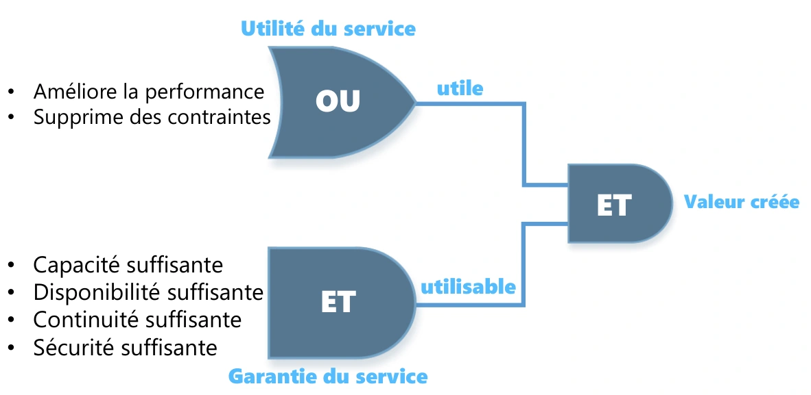
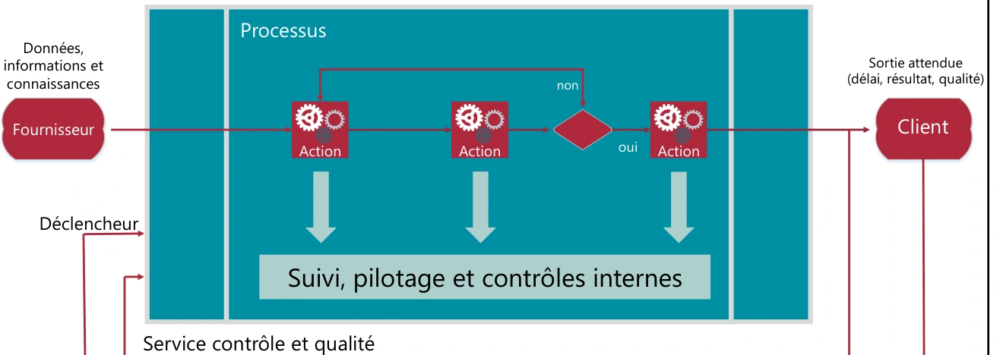
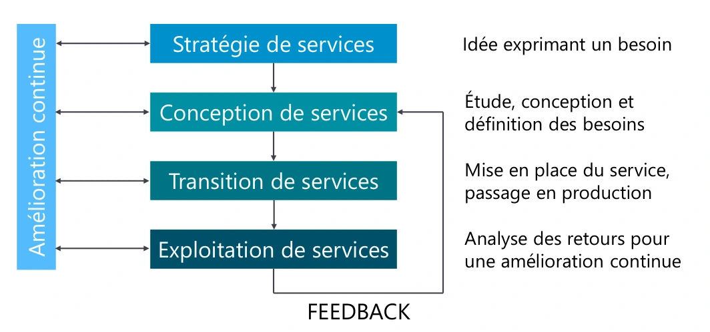

Module 02 – La gestion des services
Présentation d’ITIL
Définitions
Les 2 conditions requises pour créer de la valeur
Création de valeur

Les 5 acteurs de services
Le fournisseur de services informatiques (IT Service Provider) Entité responsable de la mise à disposition des services informatiques • Type I : fournisseur interne • Par exemple, l'organisation marketing d'une entreprise décide de mettre en place chez elle une équipe informatique chargée de gérer l'informatique qu'elle utilise. • Type II : fournisseur de services partagés • C'est le cas d'une direction informatique ayant pour clients les différentes organisations de l'entreprise (y compris elle-même). • Type III : fournisseur externe • Ce type de fournisseur propose ses services à toutes les entreprises intéressées.
Les 5 acteurs de services
Le client Personne ou organisation bénéficiaire finale d’un service, comptable des résultats • Il est le donneur d’ordre • Il est autorisé à signer un contrat (SLA) portant sur la fourniture de service informatique • Il va exprimer les besoins métiers • Négocier le service • Valider la solution • Payer la solution et le service • Il est le représentant des utilisateurs • Il a une relation particulière avec la DSI
Les 5 acteurs de services
L’utilisateur (collaborateur du client) Personne qui utilise un système informatique • Elle utilise les services informatiques au quotidien pour son activité professionnelle • Il remonte ses exigences auprès du client • Il ne paye pas l’utilisation d’un service • Il contacte la DSI par l’intermédiaire du centre de services (helpdesk)
Les 5 acteurs de services
Propriétaire de service (Service Owner – marketing)
Entité responsable qui effectue le suivi du service informatique
Les 5 acteurs de services
Le gestionnaire de service Personne responsable de la mise en place de la démarche ITIL au sein de l’entreprise et de la vie du service • Il possède une position hiérarchique élevée pour être légitime • Il coordonne les activités des propriétaires de processus et des propriétaires de services • Il travaille en collaboration avec le gestionnaire de l’amélioration continue des services
Les 2 dispositions spécialisées au cœur d’ITIL
Des fonctions Des processus
La notion de processus
Modélisation d’un processus

Les mesures d’un processus
La notion de fonction
Fonctions et processus
| Nom de processus | Commerciaux | Ressources humaines | Informatique : niveau 1 | Niveau 2 : réseau | Niveau 2 : systèmes | Niveau 2 : serveurs |
|---|---|---|---|---|---|---|
| Recrutement d’une nouvelle personne | 1 et 4 | 2 | 3 |
1. Accueil par les ressources humaines 2. Appel au helpdesk pour la création d’un nouveau compte 3. Escalade vers l’équipe « Serveurs » 4. Retour de l’information aux ressources humaines pour test
La notion de Rôle
| Rôle | Définition du support | Caractéristiques du support |
|---|---|---|
| R — Responsible | réalise et reporte — chargé de faire | En charge de la réalisation de l’action (plusieurs) ; sous-traitant de A ; au moins 1 par action |
| A — Accountable | autorise et assume — responsable | Rend des comptes sur l’avancement de l’action ; assume la responsabilité de l’action ; 1 seul par action |
| C — Consulted | est consulté | Impliqué dans l’action en tant que fournisseur d’avis ; l’avis doit être pris en compte par la personne qui l’a demandé ; au moins 1 par action |
| I — Informed | est informé | Doit prendre connaissance de l’action et de son avancement ; doit être informé sur le déroulement, le résultat ; au moins 1 par action |
Le modèle R.A.C.I
| Activité | Gestionnaire processus 1 | Responsable service 1 | Gestionnaire processus 2 | Responsable service 2 | Gestionnaire processus 3 | Responsable service 3 |
|---|---|---|---|---|---|---|
| Activité 1 | I | R | A | C | C | R |
| Activité 2 | C | I | R | C | A | I |
| Activité 3 | A | C | R | I | ||
| Activité 4 | I | A | R | C |
R = Responsible (réalise et reporte - chargé de faire)
C = Consulted (est consulté)
A = Accountable (autorise et assume - responsable)
I = Informed (est informé)
Le cycle de vie des services
